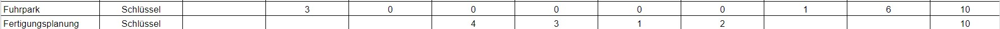
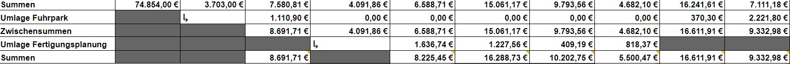

In diesem Schritt wird genauso vorgegangen, wie in Schritt 1.
Nur dass für diesen Schritt der vorhergehende Schritt 1 zwingend erforderlich ist.
In diesem Schritt wird nach jeder Umlage eine Zwischensumme gebildet, so dass wir
zweimal eine Summe erhalten und mit der zweiten Summe weiter arbeiten können
in Schritt 3.